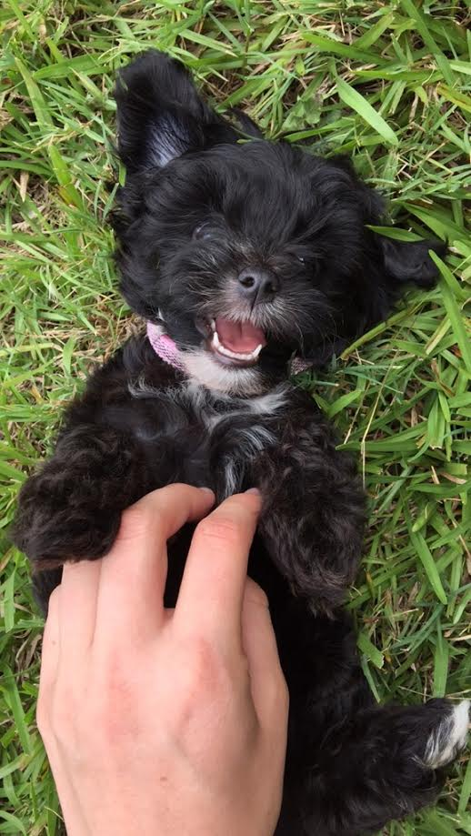
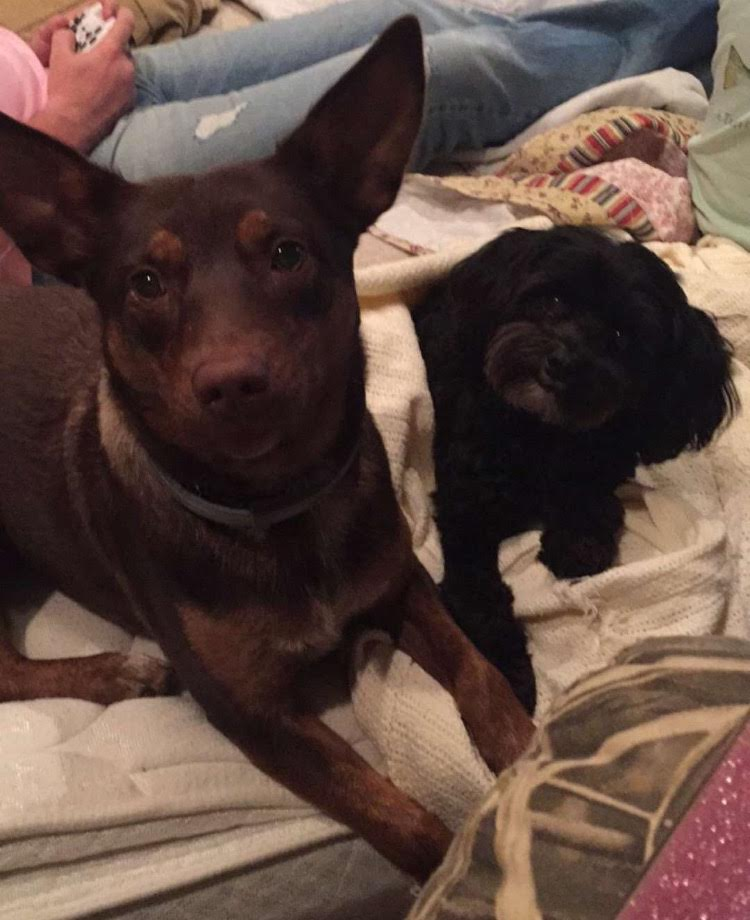

Brinkley is a Yorkshire Terrier and Toy Poodle mix, often called a Yorkie-Poo. She was given to me by my sister's boyfriend, Josh, so I have been apart of her life since her birth. She was born on April 15, 2015 in my hometown. She was the last puppy born and she was also the smallest of the litter. She is black with white under her chin and on her back left foot. Brinkley loves being outside and is super fast. She enjoys chasing people and being chased.
Click on Brinkley's face to see how she has grown up!


Brinkley's bestfriend is Chloe, a brown Blue Heeler-Labrador mix. Chloe is one of Josh's dogs and is very smart. As a puppy who did not listen, Brikley would run towards the road and Chloe would guide Brinkley back to the house, which is a part of her herding instinct. Brinkley learned when I ask her if she wants to "go play" that she gets to ride to Josh's house to play with Chloe. Chloe is much bigger than Brinkley and will grab a toy from her but lets her have it back after playing tug of war. Chloe plays rough with Brinkley but she would never hurt her.
I taught Brinkely a variety of tricks when she was a puppy. She knows how to do these on command: stay, sit, lay down, roll over, speak, high-five, and play dead. However, she is stubborn and will only cooperate if she sees a treat for completing the tricks. Brinkley has a unique personality. She loves to run up to new people and meet them. However, after her initial excitement of that new person, she will almost never come up to him or her again. She is not a very brave dog either. She is too scared to jump on any furniture and walk up or down steps. Around big dogs, she will cower and lay on her back while wagging her tail. When Brinkley barks at something she sees, she stands behing the nearest person as if that something is going to get her. However, she is a very sweet and gentle dog.
Here are some characteristics of Brinkley!!